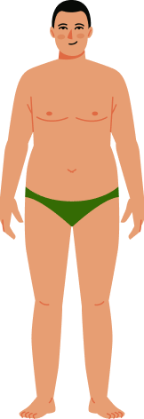

Расчет индекса массы тела (ИМТ)
Что такое индекс массы тела?
Коэффициент (ИМТ) позволяет определить, является ли масса тела нормальной, недостаточной или чрезмерной. Формула для вычисления индекса массы тела (ИМТ) была разработано Адольфом Кетле более 150 лет назад и ей пользуются до сих пор.
Определите свой индекс массы тела
Укажите ваш пол
Введите параметры
Ваш ИМТ
25.95
У Вас небольшой избыток веса. Вы можете сохранить свой результат в личном кабинете, а также записаться на консультацию к врачу в личном кабинете.

Как определяется индекс
Расчёт индекса массы тела определяет в каком соотношении находятся вес и рост, калькулятор подходит для взрослых мужчин и женщин.
В таблице ниже можно посмотреть разъяснение показателей согласно рекомендациям Всемирной Организации Здравоохранения (ВОЗ):
| Индекс массы тела | Соответствие между массой человека и его ростом |
|---|---|
| 16 и менее | Выраженный дефицит массы тела |
| 16-18,5 | Недостаточная (дефицит) масса тела |
| 18,5-25 | Норма |
| 25-30 | Избыточная масса тела (предожирение) |
| 30-35 | Ожирение первой степени |
| 35-40 | Ожирение второй степени |
| 40 и более | Ожирение третьей степени (морбидное) |
В частности, результат ИМТ является одним из факторов для выполнения бариатрической операции. Но стоит помнить, что результат носит рекомендательный характер. Перед принятием решения необходима консультация бариатрического хирурга.